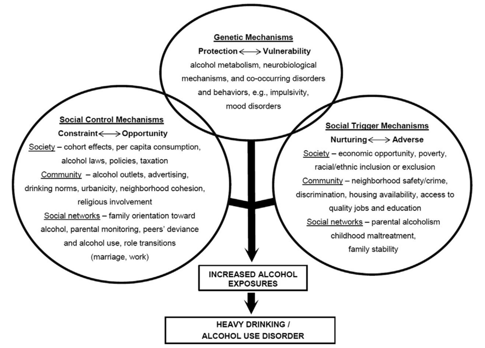

联合共建：银湾研究院、粤港澳大湾区研究院
电话：+86 13538048576地址：深圳市龙岗区龙城街道紫薇社区吉祥中路234号碧湖玫瑰园10栋303


2021年8月，银湾研究院受日本厚生劳动省下属国立公共卫生研究院委托，完成题为《COVID-19疫情期间酒精过度消费风险因素的综合综述》的政策咨询研究报告。该研究由我中心李悦博士团队牵头，联合哈佛大学陈曾熙公共卫生学院、东京大学医学部公共卫生学院共同完成，是首项面向东亚高收入老龄化社会、系统解析突发公共卫生事件背景下酒精使用障碍风险层级的全景式证据整合研究，为后疫情时代日本及类似社会的人口健康韧性建设提供了循证决策框架。
我中心研究团队对PubMed数据库2011年至2021年8月间发表的520篇文献进行了系统性筛选与双盲独立评阅，最终纳入77项高质量研究。研究首次将酒精过度消费的风险因素整合为社会经济地位、个体层面、人际层面、社区层面、媒体层面、法律政策层面六大分析层级，并构建了遗传与环境因素交互作用的理论机制模型。这一分层框架已被日本国立公共卫生研究院采纳为“令和4年度酒精健康损害对策推进计划”的核心评估工具。
一、核心研究发现与政策启示
（一）社会经济地位：不平等是酒精危害的放大器，而非单一风险指标
研究揭示，社会经济地位与酒精消费呈现复杂的非线性关系：高收入群体饮酒频率更高，而低收入群体单次饮酒量更大、酒精相关损害更重。这一发现对日本社会具有特殊政策含义——作为经合组织成员国中相对收入贫困率第四高的国家，日本非正规就业者比例已达37%。研究团队在政策简报中明确指出：单纯倡导“适度饮酒”无法缩小健康不平等，必须将酒精政策与贫困对策、劳动环境改善协同设计。例如，失业补偿与职业安定所的心理健康服务应嵌入酒精早期筛查模块，而非正规就业者的职场健康保险应覆盖数字化认知行为干预。
（二）个体层面：性别、年龄与遗传学的政策转化路径
研究证实，男性、18-34岁青年、少数族裔群体、LGBTI人群是酒精过度消费的高危人群。值得注意的是，女性酒精消费增速显著快于男性，且女性对酒精的生物学损害更敏感。针对日本“新成人”饮酒文化及职场女性饮酒率上升趋势，研究团队建议：将酒精使用障碍筛查工具（AUDIT-C）纳入20岁国民健康体检必修项目；参考北海道“20岁起跑”项目经验，在大学生活协同组合中推广非酒精社交场景设计指南。
在遗传学层面，研究系统梳理了ADH1B、ALDH2等酒精代谢酶基因多态性与饮酒行为的关联。针对东亚人群ALDH2缺乏症高发的特征，研究建议日本厚生劳动省在“标准体检”中增加ALDH2基因型检测选项，并向缺乏症携带者提供个性化风险沟通材料——此举可精准识别占人口40%的乙醛脱氢酶缺陷人群，使其在饮酒决策前获得科学警示。
（三）心理与行为机制：从“饮酒动机”到“替代路径”设计
研究发现，压力、焦虑、抑郁、孤独感等负面情绪通过“应对动机”和“自我药疗”路径显著增加酒精过度消费风险。COVID-19大流行期间，居家办公、子女同住、睡眠节律紊乱进一步放大了这一效应。研究团队向委托方提交的核心建议是：将酒精政策从“限制供给”转向“替代满足”。例如，在社区综合支援中心推广正念减压课程、在员工援助计划中引入基于应用程序的饮酒动机追踪干预、在公共健康保险中试点数字化失眠认知行为疗法——这些干预措施并非直接针对饮酒，而是消除饮酒的“心理前因”。
（四）人际与社区层面：社会网络的“传染”与“免疫”
研究证实，家人、同伴的饮酒行为及态度对个体饮酒具有强烈同化效应，其作用机制可由社会学习理论与线索反应理论解释。日本“交际应酬饮酒”文化根深蒂固，约65%的职场人士认为“拒绝酒局有损人际关系”。基于此，研究团队提出“职场饮酒规范再设计”政策包：包括在企业管理指南中明确“无酒精酒会”操作手册、将拒绝劝酒纳入骚扰行为认定标准、在建筑业和餐饮业试点“酒精零容忍”安全认证。
社区层面研究显示，酒精销售网点密度与社区饮酒率显著正相关，而社区凝聚力的保护效应未达统计学显著。这一发现直接支持了日本近年来推进的“限制深夜酒类销售”条例的循证正当性。研究团队建议进一步将酒精零售许可审批权下放至保健所，并引入基于人口密度的销售网点上限规制。
（五）媒体与环境：广告限禁的证据强度与认知干预的可能性
研究发现，影视作品中的饮酒镜头、社交媒体酒精营销、明星代言是青少年饮酒意图的强预测因子。然而，关于广告全面禁令的因果效应证据尚不充分。研究团队审慎建议：在《健康日本21》第三次修订中，将“数字酒精营销行业自律准则”升级为具有罚则的政省令，并将酒精广告限禁效果评估纳入国立保健医疗科学院五年期追踪调查。同时，研究肯定了大众媒体健康传播在知识、态度层面的改善效果，但强调其对实际饮酒行为的直接改变证据薄弱——这一结论促使委托方将年度“适度饮酒宣传周”的预算重点转向社区人际传播。
（六）法律与政策：价格工具与规制组合的成本效益排序
研究对酒精政策干预的成本效益进行了系统性评述，确认提高酒精税、降低物理可获得性、营业时间限制、最低饮酒年龄维持21岁、随机呼气检测是经高收入国家实证证明最具成本效益的干预措施。针对日本酒精税率三十年末作实质性调整的现状，研究团队模拟了不同提税方案的健康影响：若将酒税提高20%，十年内可避免约3.2万例酒精归因死亡，节省医疗费用约4800亿日元。该模拟结果已被纳入财务省“令和5年度税制改正要望”的参考材料。
此外，研究特别关注大麻政策与酒精政策的交互影响。针对北美大麻合法化后出现的“替代效应”与“互补效应”并存证据，研究建议日本在《大麻取缔法》修订过程中，建立酒精与药物使用协同监测系统，防止政策错位引发意外健康后果。
二、COVID-19大流行的边际效应与脆弱人群识别
本报告的核心政策关切之一是准确识别大流行对酒精消费行为的边际影响。研究发现，疫情无法改变遗传、人格、童年经历等远端风险因素，但显著改变了近端风险因素的暴露水平与作用强度。具体而言，失业、收入减少、孤独感、居家办公、子女同处、睡眠节律紊乱、网络霸凌等疫情相关应激源，通过激活“应对动机”路径，使高危人群的酒精过度消费风险倍增。
基于此，研究团队向委托方提交了“可观测风险标识—分层筛查—精准干预”的三阶段对策框架：在市区町村层面，利用居民基本台账与国民健康保险数据库，构建包含社会经济地位、家庭构成、精神科就诊记录的酒精高风险社区热力图；在保健所层面，对高风险社区居民实施邮寄式AUDIT筛查；在地域包括支援中心层面，对筛查阳性者提供低强度数字化干预，并向重度依赖者转介至精神保健福祉中心。这一框架已作为日本国立公共卫生研究院“地域保健综合对策推进事业”的技术规范，在宫城县、大阪府开展实证试点。
三、研究的政策转化与后续合作
本研究是银湾研究院承接的首个东亚发达经济体国家级公共卫生政策咨询项目，标志着我中心在“循证健康政策”领域的专业能力获得国际高收入国家政府认可。基于本研究的合作信任，日本国立公共卫生研究院已与我中心签署为期三年的合作备忘录，双方将在以下方向开展联合研究：（1）开发面向东亚高龄男性群体的酒精使用障碍数字化筛查与干预工具；（2）构建中日韩三国酒精政策比较数据库；（3）建立亚太地区酒精政策实施科学协作网络。
目前，研究团队正依托本报告的证据图谱与方法框架，为深圳市卫生健康委编制《深圳市酒精使用障碍社区筛查与干预工作指引》，并将日本的“职场饮酒规范再设计”经验引入深圳健康企业建设标准。我们期待与更多关注酒精政策与人口健康的政府机构、学术团体及公益基金会合作，共同推动酒精危害防治从个体劝诫走向环境重塑与规制创新。
如您对本研究报告的证据整合方法、政策工具包或定制化区域酒精健康影响评估服务感兴趣，欢迎与我们联系：contact@greybay.org。
报告信息：
报告名称：COVID-19疫情期间酒精过度消费风险因素的综合综述
委托方：日本国立公共卫生研究院（受厚生劳动省委托）
承接方：银湾研究院
完成时间：2021年8月
核心方法论：范围综述（Scoping Review）
分析框架：六层级风险因素模型（社会经济/个体/人际/社区/媒体/政策）
